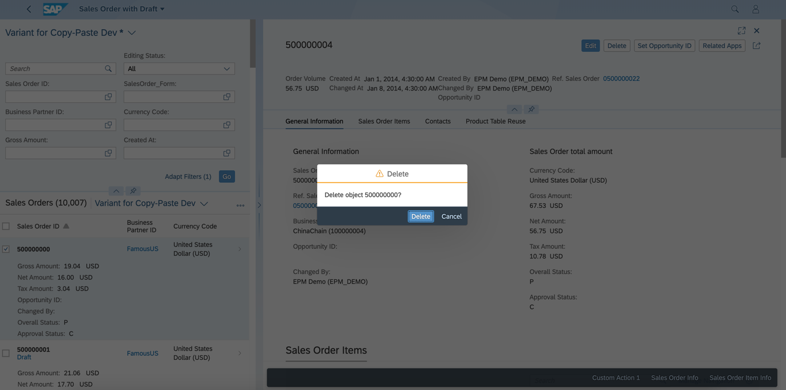

Configuring the Delete Dialog Box
You can adapt the text in the Delete dialog box to match your requirements
When a user deletes a record from the list report, the text in the dialog box "Delete Object 500000000?" is displayed in the delete confirmation, informing the user that object 500000000 is being deleted.

The corresponding i18n key for the text used by the SAP Fiori elements framework in the delete confirmation dialog is ST_GENERIC_DELETE_SELECTED. You can adapt it by maintaining a text for this key in the app’s i18n file.
The context displayed in the Delete dialog box is taken from the Title property of the HeaderInfo annotation. In the example below, the value mapped to the "so_id" property is shown in the dialog text.